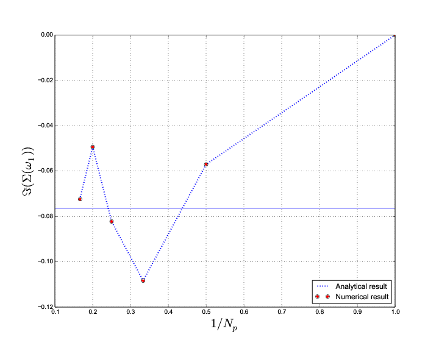

José MORAN
X2013
Diagramme de phase des cuprates
Modèle de Hubbard :
$\Rightarrow$ traitement perturbatif avec des diagrammes de Feynman
$\Rightarrow$ nécessité d'algorithmes efficaces
Concept : faire du sampling d'une distribution à l'aide d'une chaîne de Markov
Monte-Carlo diagrammatique : on fait une marche aléatoire dans l'espace des diagrammes.
Le temps que notre algorithme passe dans chaque diagramme nous donne sa valeur
Bonne convergence de l'algorithme vers les résultats analytiques
...les valeurs numériques coïncident très bien avec les valeurs analytiques..
...mais il est difficile d'extrapoler avec peu d'ordres.
La série converge-t-elle ?
Structure analytique de la série perturbative :
$\Sigma=\sum_k \sigma_k U^k$
Quel rayon de convergence pour cette série ?
Identique au Hamiltonien de départ pour $\xi=U$.
$\Rightarrow$ améliorer la convergence de la série analytique.
Structure des poles pour $\Sigma(\omega_0)$
Structure des poles pour $\Sigma(\omega_1)$
Structure des poles pour $\Sigma(\omega_3)$
Convergence nettement améliorée !
On parvient même à converger dès l'ordre 2